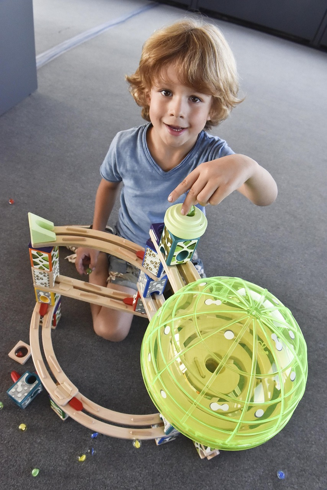
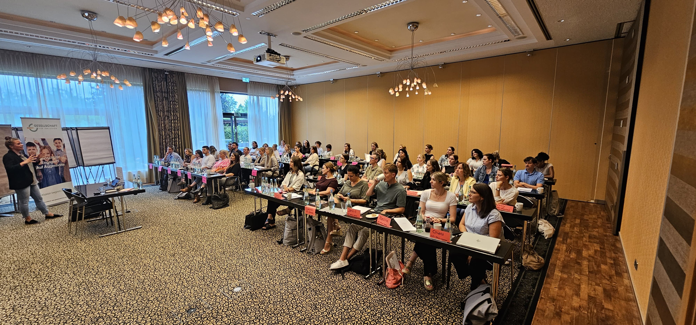
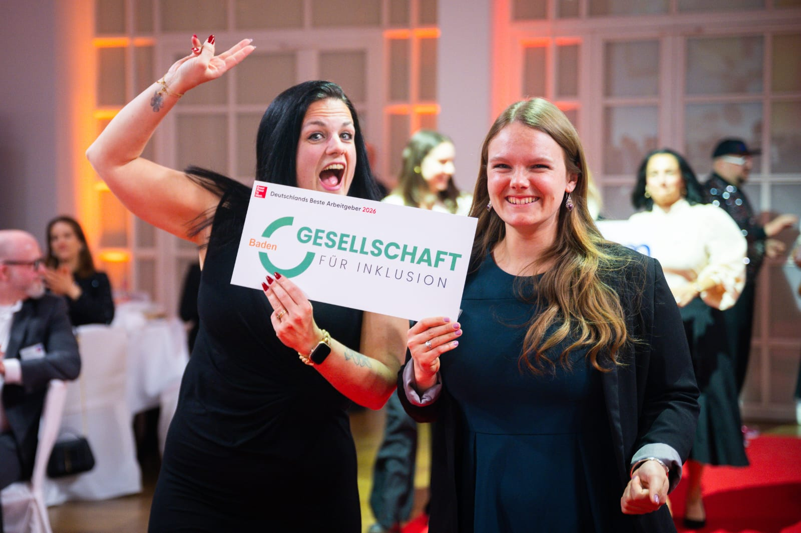
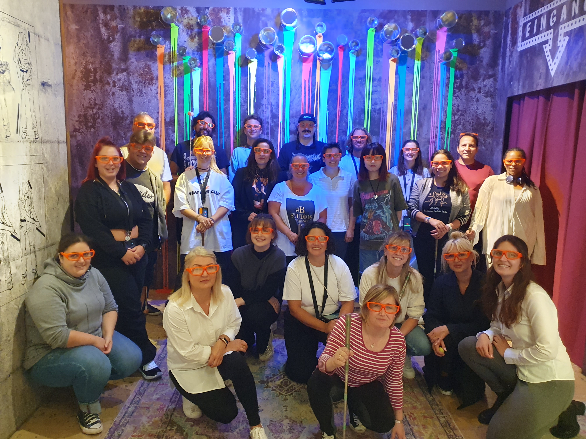

Schulen & Ämter
- Verlässliche Schulbegleitung mit festen Ansprechpartnern
- Transparente Abstimmung mit Schulen, Ämtern und Schulträgern
- Strukturierte Prozesse von der Bedarfsklärung bis zur Umsetzung
Schulbegleitung und Inklusionsassistenz
Die GFI unterstützt Schulen, Ämter und Schulträger mit abgestimmter Schulbegleitung, klaren Zuständigkeiten und fachlich begleiteten Unterstützungsmodellen.
Klare Zuständigkeiten für Schulen, Ämter und Leistungsträger – von der Anfrage bis zum laufenden Einsatz.
Transparente Abstimmung zwischen Schule, Träger und Begleitung mit nachvollziehbaren Kommunikationswegen.
Individuelle Begleitung und infrastrukturelles Pooling – abgestimmt auf Bedarf und schulische Rahmenbedingungen.
Ihr Einstieg
Ob Schule, Familie oder Bewerbung – hier finden Sie den passenden Einstieg zu Begleitung, Zusammenarbeit und Karriere bei der GFI.
So arbeitet die GFI
Die GFI verbindet praktische Erfahrung in der Schulbegleitung mit klarer Koordination und fachlicher Unterstützung. Schulen, Ämter und Leistungsträger erhalten verlässliche Strukturen – von der Bedarfsklärung bis zur laufenden Abstimmung.

Kooperation anfragen? Rufen Sie uns an: 0721/61930339
Unsere Haltung
Verlässliche Begleitung entsteht durch klare Verantwortung und strukturierte Zusammenarbeit.
Unsere Leistungen
Individuelle Unterstützung im Unterricht und im Schulalltag – mit festen Ansprechpartnern und abgestimmter Kommunikation.
Mehr erfahren
Individuelle Unterstützung im Kita- und Gruppenalltag – mit festen Ansprechpartnern und abgestimmter Kommunikation mit Team und Familien.
Mehr erfahren
Fachliche Therapie und Begleitung bei Autismus – abgestimmt auf individuelle Bedarfe, Alltag und familiäre Rahmenbedingungen.
Mehr erfahrenBeratung und Unterstützung für Familien im Alltag – mit enger Kommunikation, Transparenz und regelmäßiger Reflexion des Gesamtprozesses.
Mehr erfahrenOrientierung für Familien
Du suchst Orientierung zur Schulbegleitung? Wir erklären verständlich, was Begleitung leisten kann, welche Stellen beteiligt sind und welche nächsten Schritte sinnvoll sein können.
Für ein Freiwilliges Soziales Jahr bei der GFI erwartet Dich eine sinnstiftende Aufgabe in einem motivierten Team. FSJ’ler werden bei Kooperationspartnern angestellt und während der Zeit fortwährend begleitet.
Informationen anfragenInfrastrukturelles Pooling
Beim infrastrukturellen Pooling werden Schulbegleitungen innerhalb eines abgestimmten Konzeptes bedarfsgerecht eingesetzt. Schule, Leistungsträger und GFI klären gemeinsam Zuständigkeiten, Teamstruktur und Qualitätsanforderungen. Pooling ersetzt notwendige 1:1-Begleitung nicht pauschal.
Bedarfsgerechter Personaleinsatz kann bei geeigneten Rahmenbedingungen Vertretungen erleichtern.
Klare Rollen, verbindliche Abstimmung und enger fachlicher Austausch im Team.
Feste Ansprechpartner begleiten Planung, Kommunikation und Umsetzung mit der Schule.
Eine Umsetzung wird organisatorisch und fachlich geprüft – individuelle Bedarfe bleiben maßgeblich.
Karriere bei der GFI
Ob mit pädagogischer Erfahrung oder als Quereinsteiger: Bei der GFI bekommst Du klare Einblicke in Aufgaben, Einarbeitung und Zusammenarbeit. Strukturierte Anleitung, feste Ansprechpartner und fachlicher Austausch begleiten Deinen Einstieg in die Schulbegleitung.
Ihr Nutzen
Konkrete Arbeitsweisen statt allgemeiner Versprechen – nachvollziehbar für Schulen, Ämter und Leistungsträger.
Zusammenarbeit
Vom Erstkontakt bis zur laufenden Begleitung: klare Schritte, feste Ansprechpartner und transparente Abstimmung mit Schule und Leistungsträger.
Wir erfassen Ausgangslage, Zuständigkeit und die benötigte Unterstützungsform.
Schule, Leistungsträger und GFI klären Rollen, Kommunikation und organisatorische Voraussetzungen.
Individuelle Begleitung oder ein geeignetes Pooling-Modell werden fachlich vorbereitet.
Feste Ansprechpartner koordinieren Abstimmung, Rückmeldungen und notwendige Anpassungen.
Qualität & Standards
Verlässliche Begleitung entsteht durch klare Verantwortung, strukturierte Einarbeitung, feste Koordination und regelmäßige fachliche Abstimmung. Die GFI-Akademie unterstützt die Weiterentwicklung im Bereich Schulbegleitung.
Mehr zu QualitätWir tun unser Bestes, um ein attraktiver Arbeitgeber zu sein und uns fortlaufend zu verbessern.
Stimmen aus der Praxis
Wir hatten Probleme mit unserem alten Schulbegleiter, der durch einen anderen Anbieter gestellt worden war. Es wurde sich auf unsere Kontaktanfrage direkt bei uns gemeldet und uns schnell ein neuer Schulbegleiter organisiert. All dies trotz Corona!
Die Eltern und ich sind mit den Leistungen unserer Inklusionsbegleiterin sehr zufrieden. Wir stehen im wöchentlichen Austausch. G. mag sie und freut sich über ihre Begleitung, über die gemeinsamen Aktivitäten.
Wir sind mit den Leistungen der Schulbegleitung sehr zufrieden. Unsere Anliegen werden immer schnell bearbeitet und eine Lösung gefunden. Im Krankheitsfall wurde immer eine Ersatzkraft gefunden!
Wir sind insgesamt sehr zufrieden. Unsere Schulbegleitung wurde sorgfältig ausgewählt und passt gut zu unserem Kind. Wir empfehlen Euch uneingeschränkt weiter und sind froh, so gut betreut zu werden.
Die Firma hat ganz viel Herz. Wir können sie uneingeschränkt weiterempfehlen!
Unser Sohn braucht seit vielen Jahren eine Inklusionsassistenz und wir hatten noch nie ein so gutes Zusammenspiel zwischen Anbieter, Eltern, Schule und I-Helferin. Es wird stets Kontakt gehalten und versucht, Lösungen und Entlastungen zu finden.
Ich habe den Eindruck, dass unsere Schulbegleitung ihre Arbeit sehr ernst nimmt und Freude an ihrer Tätigkeit hat.
Herausragendes Engagement, setzen sich sehr für eine passende I-Kraft ein.
Passgenaue Auswahl der Inklusionsassistenz und guter Blick für die Bedürfnisse. Herausragendes Engagement, setzen sich für eine passende I-Kraft auch in einem besonders schwierigen Fall ein.

Wissen
Weiterleitbare Inhalte zu Schulbegleitung, Fortbildung und fachlichen Themen für Schulen, Ämter und interne Abstimmungen.

Weiterbildung Schulbegleitung: Der perfekte Einstieg in die Schulbegleitung. Wir freuen uns, Ihnen zu Beginn des neuen Jahres unsere GFI-Akademie vorzustellen.

In unserer langjährigen Praxis haben wir festgestellt, dass Schulbegleiter und Schulbegleiterinnen oft unzureichend auf die spezifischen Herausforderungen vorbereitet sind.

Herzlich willkommen bei der GFI und einen super Start in das neue Schuljahr! Das wünschen wir unseren KollegInnen der GFI.
FAQ
Antworten zu Schulbegleitung, Pooling, Zuständigkeiten und Kooperation – kompakt zusammengefasst.
Sie nehmen Kontakt auf, wir klären Bedarf, Zuständigkeit und Rahmenbedingungen. Anschließend stimmen wir mit Schule und Leistungsträger die nächsten Schritte ab.
Für institutionelle Anfragen stehen feste Ansprechpersonen bereit. Erreichen Sie uns telefonisch unter 0721/61930339 oder per E-Mail an info@gfi-baden.de.
Beim Pooling unterstützt ein abgestimmtes Team bedarfsgerecht innerhalb schulischer Strukturen. Schule, Leistungsträger und GFI planen Rollen und Einsatz gemeinsam fachlich. Ausführliche Informationen finden Sie auf der Seite Infrastrukturelles Pooling.
Nein. Pooling ersetzt notwendige Einzelbegleitung nicht pauschal. Ob ein Modell geeignet ist, wird im Einzelfall fachlich und organisatorisch geprüft.
Ja. Neben ausgebildeten Fachkräften sind auch Quereinsteiger willkommen. Aufgaben, Einarbeitung und Zusammenarbeit werden strukturiert vermittelt.
Schulen, Ämter und Kooperationspartner erreichen uns telefonisch unter 0721/61930339 oder per E-Mail an info@gfi-baden.de. Gern stimmen wir Zuständigkeiten und Abläufe direkt ab.
Nächster Schritt